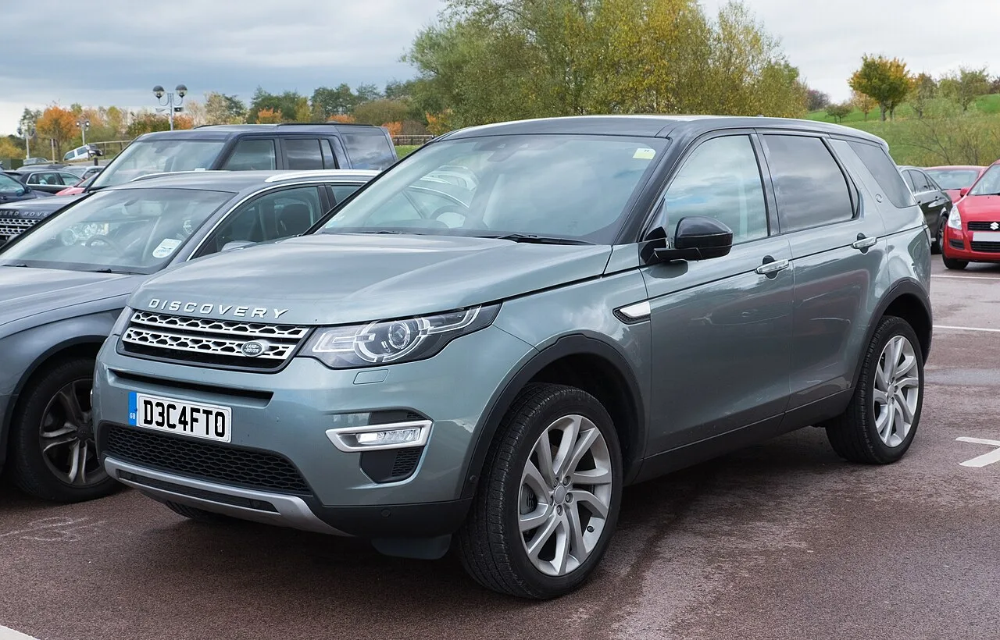

▲ 혼다 CR-V. 혼다코리아는 올해 말 국내 자동차 판매를 종료한다
2026년 1~7월 수입 승용차 신규 등록은 21만5,008대로 전년 동기 대비 30.1% 늘었습니다. 시장이 커지고 있다는 뜻입니다. 그런데 같은 기간, 혼다코리아는 올해 말 국내 자동차 판매를 종료한다고 밝혔습니다. 2003년 진출 이후 23년 만입니다.
성장하는 시장에서 왜 누군가는 철수할까요. 브랜드별 숫자를 갈라놓고 보면 답이 나옵니다.
1. 세 브랜드가 7개월 동안 판 대수
숫자를 나란히 놓으면 격차가 실감납니다. 올해 1~7월 실적입니다.
| 브랜드 | 등록 대수 | 증감률 |
|---|---|---|
| 테슬라 | 6만6,376대 | +149.8% |
| BYD | 1만4,521대 | +820.2% |
| 혼다 | 410대 | -68.4% |
| 포드 | 367대 | -87.5% |
| 링컨 | 361대 | -56.2% |
혼다와 포드, 링컨 세 브랜드가 7개월 동안 판 차를 모두 더하면 1,138대입니다. 테슬라는 같은 기간 6만6,376대를 팔았습니다. 월평균으로 환산하면 약 9,482대, 하루 약 316대입니다. 즉 세 브랜드가 7개월에 걸쳐 판 물량이 테슬라의 나흘치에 못 미칩니다.
BYD와 비교해도 마찬가지입니다. BYD는 820.2% 성장하며 1만4,521대를 기록했습니다. 세 브랜드 합계의 12배가 넘습니다. 진출한 지 얼마 되지 않은 브랜드와, 20년 넘게 국내에서 영업해온 브랜드들의 위치가 뒤바뀐 상태입니다.

▲ 혼다 어코드. 자동차 판매는 종료되지만 모터사이클 사업과 A/S는 유지된다
2. 혼다 — 하이브리드 강자가 하이브리드 시대에 접었다
혼다코리아는 올해 말 국내 자동차 판매 사업을 종료합니다. 다만 모터사이클 사업과 A/S는 계속됩니다. 기존 차량 소유자의 정비와 부품 공급은 유지된다는 뜻이라, 보유 고객이 당장 곤란해지는 상황은 아닙니다.
이 철수에서 가장 아이러니한 지점은 시점입니다. 지금 국내 시장에서 가장 잘 팔리는 파워트레인은 하이브리드입니다. 그리고 혼다는 하이브리드 기술에서 세계적으로 손꼽히는 회사입니다. 가장 유리해 보이는 조건에서 가장 먼저 나가는 셈입니다.
이유는 하이브리드 기술이 아니라 가격과 물량에 있습니다. 국내에서 혼다 하이브리드는 국산 하이브리드보다 비싸면서, 독일 프리미엄 브랜드만큼의 브랜드 프리미엄은 갖지 못하는 위치에 있었습니다. 여기에 엔화 환율과 물량 배정 문제가 겹치면서 가격 경쟁력을 확보하기 어려웠습니다. 최근 100대 한정 최대 600만 원 할인을 내건 것도 신규 판매 확대가 아니라 재고 정리의 성격이 짙습니다.

▲ 포드는 올해 1월 직영 체제에서 딜러 주도형으로 전환했다
3. 포드·링컨 — 철수가 아니라 체제 전환
포드와 링컨은 조금 다른 경로입니다. 올해 1월 본사 직영 체제에서 선인자동차 중심의 딜러 주도형으로 전환했습니다. 철수가 아니라 운영 방식의 변경입니다.
이 전환은 비용 구조를 바꾸는 선택입니다. 직영 법인은 본사가 마케팅과 재고, 인력을 모두 부담합니다. 판매가 줄면 고정비가 그대로 손실이 됩니다. 딜러 주도형으로 넘기면 본사 부담은 줄지만, 브랜드 전략의 통제력도 함께 줄어듭니다.
포드는 신차 투입으로 대형·프리미엄 SUV 시장을 공략하겠다는 계획을 내놓았습니다. 실제로 브롱코와 익스플로러 계열은 국내에 확고한 마니아층이 있습니다. 다만 87.5% 감소라는 숫자를 되돌리려면 모델 몇 개로는 부족합니다.

▲ 랜드로버 디스커버리 스포츠. 2026년 12월 생산 종료로 12년 만에 단종된다
4. 브랜드만이 아니라 모델도 사라진다
같은 흐름이 개별 모델에서도 진행 중입니다.
랜드로버 디스커버리 스포츠는 2026년 12월 생산을 끝으로 단종됩니다. 2014년 출시 후 12년 만입니다. 최근 분기 판매가 2,452대로 전년 대비 49.3% 줄었고, 같은 기간 레인지로버 이보크가 1만615대, 벨라가 4,605대를 판 것과 비교하면 격차가 뚜렷합니다.
여기에 규제 요인이 겹쳤습니다. 2026년 7월부터 유럽에서 운전자 주의 분산 경고 등 추가 안전 요건이 적용됐는데, 디스커버리 스포츠는 이 사양을 충족하지 못한 것으로 알려졌습니다. 판매가 잘 되는 모델이라면 개발비를 들여 대응했겠지만, 그렇지 않은 모델은 그 시점이 곧 수명의 끝이 됩니다. 직접적인 후속은 확정되지 않았고, 소형 SUV '디펜더 스포츠'가 역할을 이어받을 가능성이 거론됩니다.
폭스바겐 투아렉도 파이널 에디션을 끝으로 24년의 역사를 마무리합니다. 국산차에서도 신형 아반떼의 1.6 가솔린이 단종됐습니다. 브랜드 철수든 모델 단종이든, 공통점은 하나입니다. 전동화 전환기에 애매한 위치에 있는 것부터 정리된다는 것입니다.
| 대상 | 내용 | 시점 |
|---|---|---|
| 혼다코리아 | 자동차 판매 종료 (모터사이클·A/S 유지) | 2026년 말 |
| 포드·링컨 | 직영 → 딜러 주도형 전환 | 2026년 1월 |
| 랜드로버 디스커버리 스포츠 | 단종 | 2026년 12월 |
| 폭스바겐 투아렉 | 파이널 에디션 | 진행 중 |
| 현대 아반떼 1.6 가솔린 | 단종 | 완료 |
5. 74.6% — 시장이 커질수록 좁아진다
이 모든 변화의 배경에 있는 숫자가 74.6%입니다. 테슬라, BMW, 메르세데스-벤츠, BYD 네 브랜드가 전체 수입차 시장의 4분의 3을 차지하고 있습니다.
시장이 30% 커졌다는 말과 상위 4개사가 74.6%를 가져갔다는 말은 함께 성립합니다. 그리고 이 조합은 나머지 브랜드에게 가혹합니다. 파이는 커졌는데 내 몫은 줄어드는 상황이기 때문입니다. 실제로 성장의 상당 부분은 전기차에서 나왔습니다. 수입 전기차 등록이 9만9,218대로 132.8% 늘며 전체의 46.1%를 차지했습니다.
정리하면 지금 수입차 시장에서 살아남는 조건은 둘 중 하나로 좁혀집니다. 전동화 라인업을 갖췄거나, 확고한 브랜드 프리미엄이 있거나. 혼다는 하이브리드는 있었지만 순수 전기 라인업이 국내에서 약했고, 프리미엄 포지션도 아니었습니다. 포드와 링컨도 마찬가지 위치에 있었습니다.
소비자 입장에서 이 흐름은 양면적입니다. 선택지가 줄어들면 가격 경쟁도 줄어듭니다. 반면 철수하는 브랜드의 차를 보유하고 있다면 잔존가치와 A/S가 걱정되는 상황이 됩니다. 혼다처럼 A/S를 유지하겠다고 밝힌 경우라도, 부품 수급 기간과 보증 승계 조건은 미리 확인해두는 편이 안전합니다.